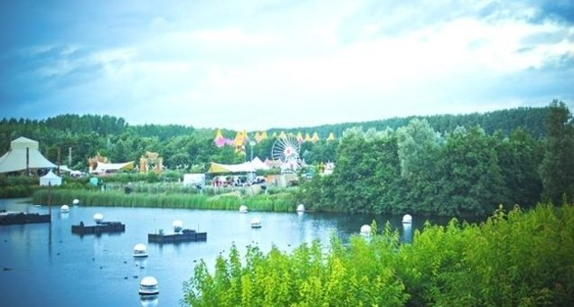

inthemix goes to Mysteryland 2012


It’s common for Aussie clubbers to look longingly abroad to the hedonism of the White Isle, the underground haven of Berlin, or any of those incredible looking large-scale events across Europe, with excessive line-ups and out-of-this-world production. From the late ‘90s onwards, there were a handful of events that held such mystique for me personally; Germany’s Nature One, Global Gathering in the UK and Holland’s Mysteryland.
It was the latter that represented the next-level spectacle that became a trademark of the Dutch, particularly ID&T events. Australia was given its own glimpse when Sensation, Trance Energy and later Defqon.1 were shipped over, though Mysteryland always represented the pinnacle when it came to sprawling, multi-genre day events. Those gob-smacking lineups that had pretty much everybody on board, from techno to trance and beyond, as well as that spectacular production: iconic images of crowds of thousands milling in front of a colossal castle stage, or a trio of spinning Dutch windmills. They just looked so giddy and otherworldly.
While ID&T has stolen its own thunder in recent years when it comes to hype, due to the sheer excess of Tomorrowland in Belgium, Mysteryland is still the spiritual parent of that festival. Though as it turns out, it’s a completely different event, and a markedly more ‘adult’ one. 2012 marked the 19th year Mysteryland took place just outside of Amsterdam, and you could certainly feel its heritage on the day, with the age of attendees stretching from early 20s right through to 50s and even 60s. You got the sense it’s an authentic Dutch cultural event; a party that trades excess for style, while still pulling out all the stops to create a genuine fantasy world.
Exploring the Floriade
One of the central things that enable Mysteryland to create this otherworldly vibe is the grassy fields and rolling hills of the Voormalig Floriade, just outside of Amsterdam, which has hosted the party and its 60,000 attendees for nearly a decade. The crowd does feel evenly dispersed across the 15 different stages, which lends itself to a genuine ‘exploration’ vibe as you walk the grassy fields, cross the rivers and climb towering slopes (or otherwise slide down them), in order to get from stage to stage.
What’s also defining is the effort ID&T go to in filling every last inch of the festival grounds with colorful detail, with something capturing your eye wherever you look: flags dot the hills bearing crests of an imaginary nation, arranged in circular formations that can be admired from a distance. Structures built from tall wooden slats pepper the landscape; walls, fences, towering entrances to another arena. Around every corner there is something wonderful and strange to greet you – giant glass butterflies, enormous round balloons hanging from the trees. Wandering around, you might stumble across a giant teddy bear, which you can plonk yourself under for a bit of a rest; or all manner of other strange and beautiful creatures.
A peek at some of the aerial shots offers an idea of the magical land that was created for the day – while Tomorrowland conjures up its own fantastical version of Alice In Wonderland that revels in its excess, Mysteryland is a more restrained endeavor to create a space where a union of mystical nations come together for the day; which heightens the feeling of “togetherness” that ID&T emphasise as definitive of the Mysteryland brand. Imagine Bilbo Baggins’ Shire in Lord of the Rings; this is a fantasy land that could almost feel real.
Heading north
The grounds of the Voormalig Floriade are somewhat split into two main regions, each housing an even split of the different arenas, and arrival just after midday sees us venturing to explore the northern sprawl of the grounds. The journey leads us over a lake spotted with lily-pads, with a path snaking across it; lined across the bank to our right are around a hundred of those golden, metallic Chinese cats, all waving their paws at us in unison.
Not far away is one of the several main arenas of the festival, the ‘Mondade’ stage. Plonked right on the sand next to the river, with sterling water views as a backdrop, the DJ booth is placed on a circular, wooden platform in the middle of the dancefloor, which punters gather around from all angles. Suspended above are several tiers of colourful, circular canopies; offering shelter from the rain that will soon begin to shower at regular intervals, while still allowing it an open-air feel. It’s the stage that’ll host the ‘bigger’ end of the house and techno spectrum throughout the day, with sets from Loco Dice, Aeroplane and Simian Mobile Disco.